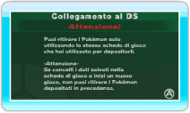
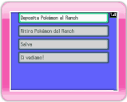
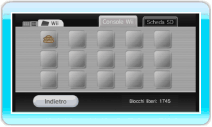

13 |
Collegati alla console Nintendo DS |
 |
Puoi depositare o ritirare i Pokémon catturati o scambiati in Pokémon Diamante o Pokémon Perla usando la tua console Nintendo DS.

Schermo Wii Quando selezioni COLLEGATI ALLA CONSOLE NINTENDO DS nel menu principale di My Pokémon Ranch, compare la schermata qui a destra. Dopo aver letto attentamente il messaggio, premi Quando passi dallo schermo di My Pokémon Ranch a quello mostrato qui sotto, accendi la console Nintendo DS con inserita una scheda di gioco Pokémon Diamante o Pokémon Perla. Seleziona COLLEGAMENTO ALLA CONSOLE Wii nel menu principale di Pokémon Diamante o Pokémon Perla.
Se il collegamento riesce, sulla console Wii e sulla console Nintendo DS compaiono gli schermi mostrati qui sotto. Da qui in avanti, usa la console Nintendo DS. In ogni caso, la prima volta che ti connetti alla tua console Nintendo DS, sulla console Wii devi scegliere un Mii guardiano (My Pokémon Ranch) che si prenda cura dei Pokémon di un Allenatore (vedi sezione Nota: puoi cambiare il guardiano in qualunque momento.

Schermo DS
Sullo schermo della console Nintendo DS compare il menu principale. Scegli cosa vuoi fare e premi Menu principale della console Nintendo DS
Per maggiori dettagli dopo questo passo, fai riferimento alle sezioni “14. Deposita Pokémon” e “15. Ritira Pokémon”.

Schermo Wii ● Pokémon depositati I dati del Ranch vengono salvati nella console Wii. Puoi accedere ai dati dallo schermo Gestione dati. Nota: se cancelli i dati salvati, tutti i Pokémon depositati vengono cancellati e non potrai più ritirarli. Una volta cancellati, i dati salvati non possono essere recuperati. |
 .
. |
 |
 |